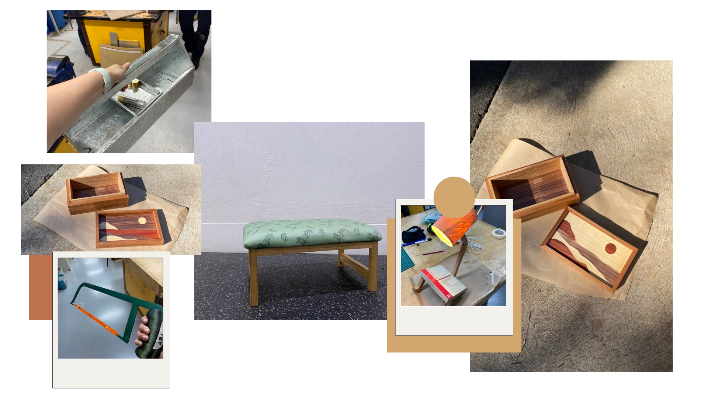

My name is Ashton Barr, I am a third year student at Australian Catholic University.
This is me:

Information about me:
I am in my third year at university, studying at Australian Catholic University. My degree is a double, in which I am studying a Bachelor of Education (Secondary)/Bachelor of Arts (Design innovations and Technology). During my degree I have identified my major, industrial timber, and my minor, food technology. I am in the process of designing and creating my major work which is due at the conclusion of the semester. As I am in my third year, I have completed three placements, two at public schools and one at a Catholic school, providing me with a range of skills, understanding, and resources for my professional career.
Although I do spend majority of my time at university and work, I have a range of hobbies that I do in my spare time, as well as make time to do them. I enjoy going to the gym and going on runs, as well as crocheting. I am currently training for a half marathon and completing a range of crochet projects. By creating and sticking to a routine and spending time with loved ones, I am able to successfully manage my time.
Professional Summary
- Completing third consecutive year at University
- Completed three practium plcements at various schools
- Completed work as a SLSO at various schools
Professional Journey
- 2023: Enrolled and continuing study, Bachelor of Education (Secondary)/Bachelor of Arts (Design Innovations and Technology)
- 2024: Completed first and second practicum placement
- 2025: Recieved job as an SLSO staff memeber and completed thrid practicum placement
Practicum Placement Overview
| School | Subjects Taught | Year Level | Term |
|---|---|---|---|
| Georges River College, Peakhurst Campus | Technology Mandatory, Industrial | 7-10 | End of term 2, 2024 |
| Marist Catholic College, Penshurst | Technology Mandatory, Industrial and Food Technology | 7-12 | End of term 4, 2024 |
| Holsworthy High School, Holsworthy | Technology Mandatory, Industrial | 7-12 | End of term 2, Start of term 3, 2025 |